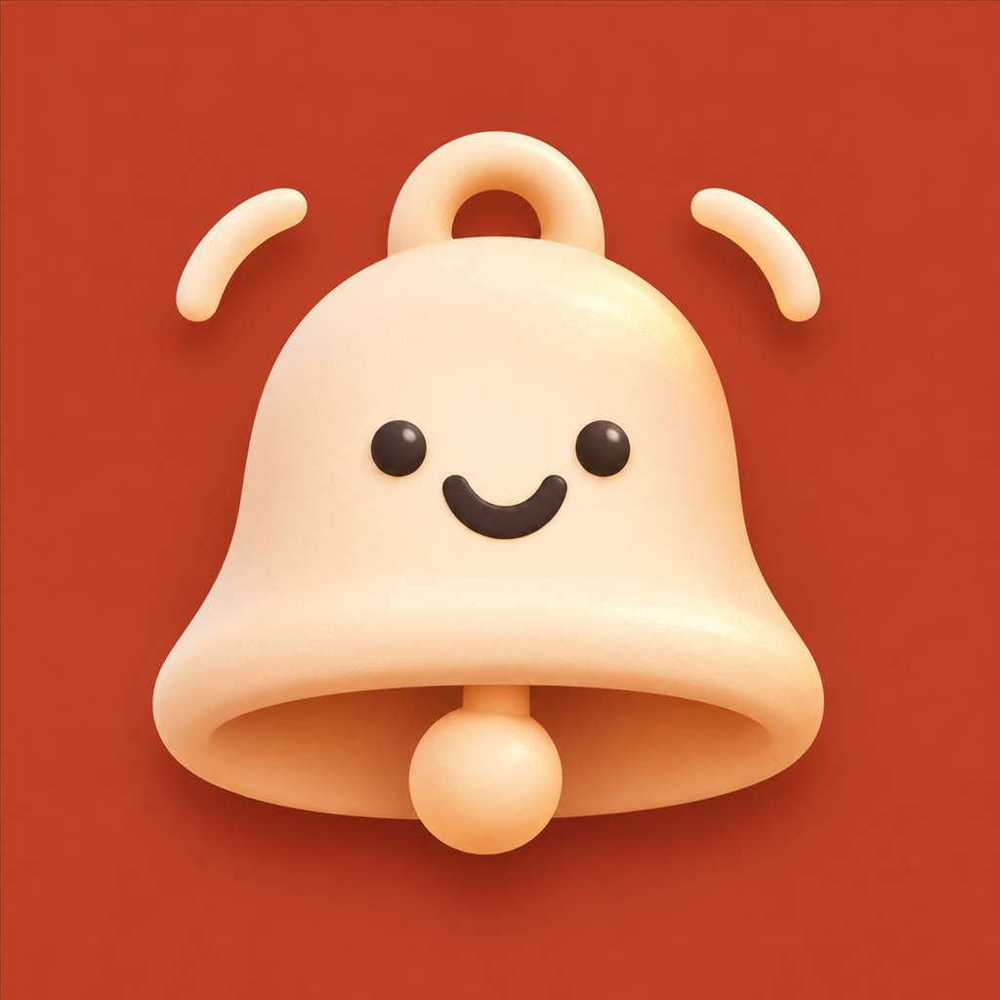
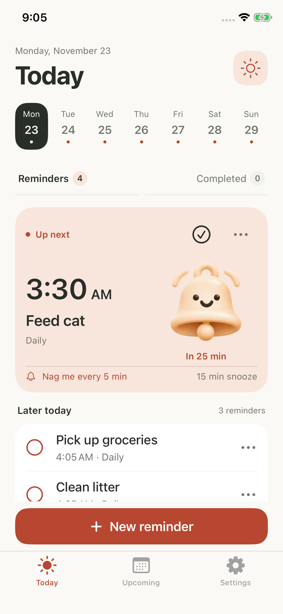

A nudge at your pace
Choose Off, or every 1, 2, 5, 10, 15, 20, or 30 minutes. Nags can keep one Lock Screen card while Nudge is closed, subject to available scheduling space.
How notification delivery works
Nudgeby Jason WangMade for iPhone · 1.1.26 (38)
A reminder app that keeps things simple. Give it a time, let it nudge you, and get back to living.
iOS 17.4+ · Local reminders · No account to create
Keyboard Done buttons, clear AM/PM times, and search that stays out of your way.

A closer look
Fresh iPhone 11 Pro simulator captures from the 1.1.26 source.
Your day in one calm view. See what needs attention, what is snoozed, and what is coming next. Bell Buddy keeps you company with a live countdown.
Open full-size screenshotScreenshots use illustrative reminders, not personal data. The native app provides the keyboard, animations, and Lock Screen behavior.
Fits the way you live
Choose Off, or every 1, 2, 5, 10, 15, 20, or 30 minutes. Nags can keep one Lock Screen card while Nudge is closed, subject to available scheduling space.
How notification delivery worksDaily, weekdays, weekly, monthly, yearly, or selected weekdays. Complete one occurrence—even on a future date—while the rest of the series continues.
Snooze from the Lock Screen to pause that reminder for 15 minutes, or mark it Done. Tap the notification to open its time-adjustment menu in Nudge.
Chime, Digital Chime, Glass, Digital Glass, Droplet, iPhone default, or Silent. Preview sounds and save your favorites as defaults. Sound and vibration follow your iPhone settings.
Bell Buddy blinks, looks around, and reacts when tapped. A live countdown, animated time menus, and a gentle completion animation make Nudge feel alive.
Use Today, Tomorrow, the upcoming weekday shortcut, or the calendar. Recurring schedules follow your iPhone's local time zone with daylight-saving handling.
Your reminders, protected
Nudge keeps a verified recovery copy on your iPhone. If the main database is damaged or missing and a valid copy is available, it restores your reminders automatically.
Export a separate JSON backup from Settings, or import one to add missing reminders. Existing records are preserved. Keep an exported copy outside Nudge for protection against losing your phone or deleting Nudge.
Automatic backup is onContinuous local nags work when their repeating schedule fits in Nudge's shared budget of 60 pending notification entries. Future reminders use that same budget now. One-minute nags use one entry; 2-minute nags use 30, 5-minute nags use 12, 10-minute nags use 6, 15-minute nags use 4, 20-minute nags use 3, and 30-minute nags use 2.
If a repeating group won't fit, Nudge warns you and may use a finite queue of separate alerts, which can stack. This queue needs Nudge to open or handle an action to replenish it. It is not unlimited in every configuration. The one-card method has been tested on an iPhone 11 Pro with iOS 17.4.1; it relies on older iOS notification behavior.
The native app schedules notifications with iOS, so delivery does not require Nudge to stay open. Allow notifications and enable Lock Screen alerts in iPhone Settings. Focus, Silent mode, and notification settings still control how alerts appear and sound. Nudge does not bypass them.
Download Nudge-1.1.26-Unsigned from the 1.1.26 build's Artifacts section, extract the ZIP, then sign and sideload the IPA using your usual tool. GitHub sign-in is required; the artifact is retained until December 6, 2026. This is a sideload build, not an App Store or TestFlight release.
To update, export a backup and install over the existing app using the same signing account and app identifier. Open Nudge once afterward. Minimum iOS version: 17.4.
Ready when you are
Version 1.1.26 (38) · iPhone · iOS 17.4 and later